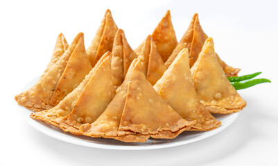

* સમોસા બનાવવા જરૂરી સામગ્રી:
- સમોસા નો લોટ બાંધવા માટેની સામગ્રી
- મેંદા નો લોટ 150 ગ્રામ
- અજમો ¼ ચમચી
- તેલ 5-6 ચમચી
- સ્વાદ મુજબ મીઠું
- પાણી જરૂર મુજબ
* સમોસા નું પુરણ બનાવવા માટેની સામગ્રી:
- ચેવડા નમકીન 50 ગ્રામ
- મગદાળ નમકીન 50 ગ્રામ
- આલુભૂજીયા 50 ગ્રામ
- વરિયાળી 1 ચમચી
- ગરમ મસાલો ½ ચમચી
- આમચૂર પાઉડર ½ ચમચી
- ખાંડ 1 ચમચી
- લાલ મરચાનો પાઉડર ½ ચમચી
- કીસમીસ ના ટુકડા 2-3 ચમચી
- ઝીણા સુધારેલા કાજુ ના ટુકડા 5-6 ચમચી
- ઘી 2 ચમચી
|
સમોસા નો લોટ બાંધવાની રીત:
- સૌ પ્રથમ એક વાસણમાં મેંદા નો લોટ ને ચાળી ને લ્યો એમાં હાથ થી મસળી ને અજમો નાખો સાથે સ્વાદ મુજબ મીઠું અને ત્રણ ચાર ચમચી તેલ નાખી લોટ અને તેલ ને બરોબર મિક્સ કરી લ્યો ત્યાર બાદ થોડું થોડુ પાણી નાખી મિડીયમ કઠણ લોટ બાંધી લ્યો ને બાંધેલા લોટ ને બે મિનિટ મસળી ઢાંકી ને એક બાજુ મૂકો.
* સમોસા નું પુરણ બનાવવાની રીત:
- પૂરણ બનાવવા મિક્સર જાર માં મિક્સ ચેવડો, આલુભૂજિયા, મગદાળ, વરિયાળી અને ખાંડ નાખી પીસી લ્યો હવે પીસેલા મિશ્રણ ને એક વાસણમાં કાઢી લ્યો એમાં લાલ મરચાનો પાઉડર, આમચૂર પાઉડર, ગરમ મસાલો, કાજુના ટુકડા, કીસમીસ ના ટુકડા નાખી બરોબર મિક્સ કરી લ્યો હવે એમાં ઘી નાખો ને ફરી બરોબર મિક્સ કરી લ્યો.
સમોસા બનાવવાની રીત:
- બાંધેલા લોટ ને ફરી બરોબર મસળી લ્યો ને જે સાઇઝ ના સમોસા બનાવવા હોય એ સાઇઝ ના લુવા બનાવી લ્યો હવે લુવા ને લંબગોળ વણી લ્યો અને ચાકુ થી વચ્ચેથી એક સરખા ભાગ કરી લ્યો ત્યાર બાદ બધી બાજુ પાણી વારી આંગળી લગાવી ચાકુ થી કાપેલ ભાગને એક ઉપર એક થી ચોંટે એમ ચિપકાવી લઈ કોન બનાવી લ્યો.
- હવે કોન માં તૈયાર કરેલ પુરણ થોડું ભરી લ્યો ને ઉપર ના ભાગમાં રહેલ કિનારી પર પાણી લગાવી હાથ વડે દબાવી ને ચિપકાવી લ્યો આમ બધા સમોસા વણી ને ભરી લ્યો ને પેક કરી લ્યો અને એક બાજુ મૂકતા જાઓ.
- હવે ગેસ પર એક કડાઈમાં તેલ ગરમ કરવા મૂકો તેલ મિડીયમ ગરમ થાય એટલે એમાં પહેલા તૈયાર કરેલ સમોસા નાખી ધીમા તાપે તરવા એક બાજુ થોડા તરી લીધા બાદ બીજી બાજુ ઉથલાવી નાખવા આમ બધી બાજુ ઉથલાવી લાઈટ ગોલ્ડન થાય ત્યાં સુધી તરી લ્યો ત્યાર બાદ કાઢી લેવા આમ બધા સોમસા તરી ને તૈયાર કરી લ્યો.
- સમોસા તરી લીધા બાદ બિલકુલ ઠંડા થવા દેવા સાવ ઠંડા થાય પછી જ એર ટાઈટ ડબ્બામાં ભરી લેવા ને મજા લ્યો ડ્રાય મીની સમોસા
|